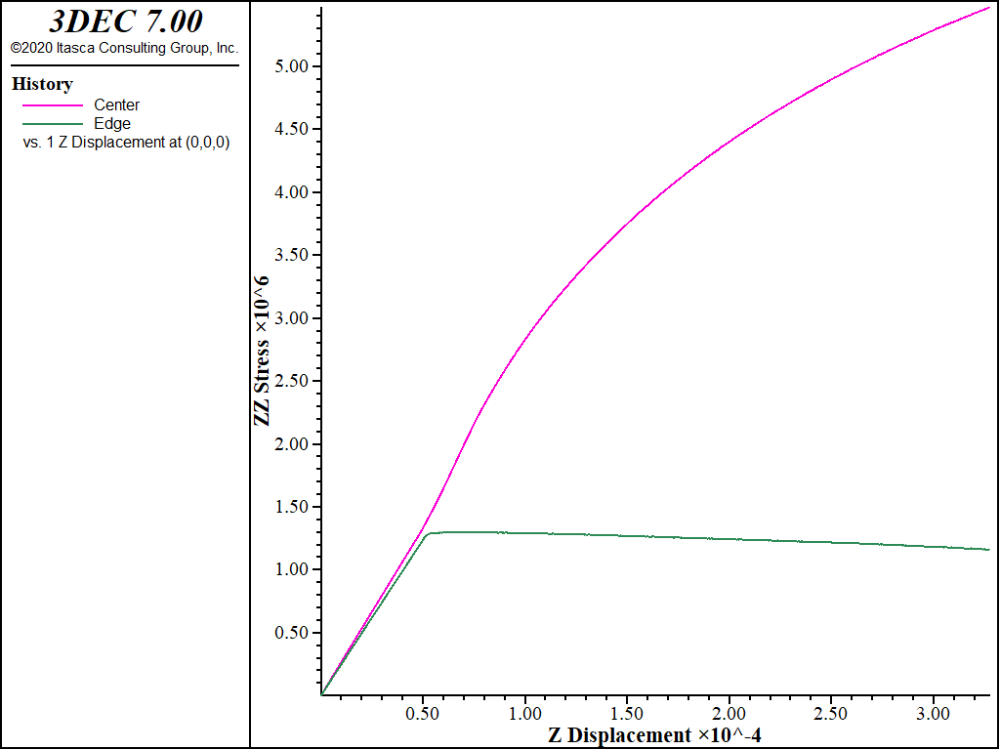
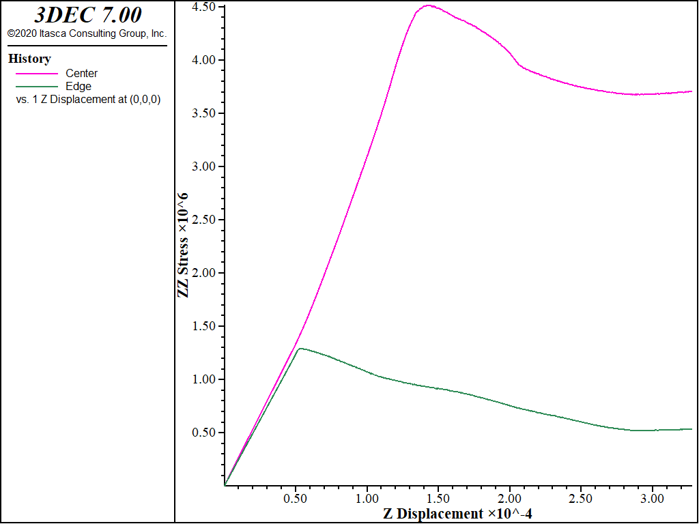
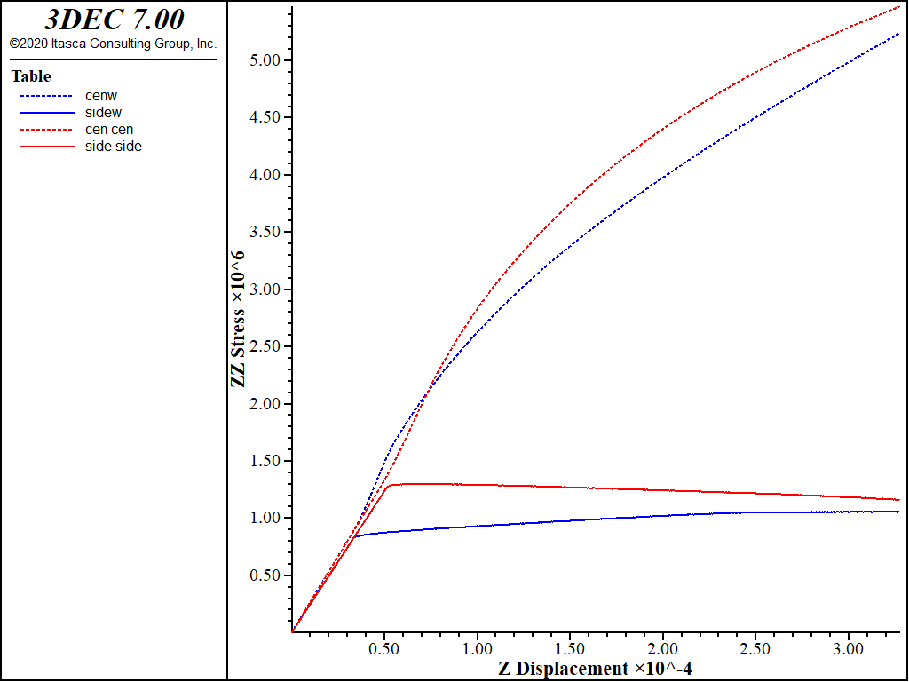

网格单元
本构模型概述
本节概述 3DEC 中的本构模型，并就其适用场景提出建议。本构模型（Constitutive Models）部分介绍模型公式的背景信息。
3DEC 内置的网格单元力学材料模型 [1] 见下表：
| 模型 | 代表性材料 | 应用示例 |
|---|---|---|
| （各向同性）弹性（(Isotropic) elastic） | 均质、各向同性连续介质；线性应力—应变行为 | 低于强度极限加载的人工制造材料（例如钢材）；安全系数计算 |
| 正交各向异性弹性（Orthotropic elastic） | 具有三个相互垂直弹性对称面的材料 | 低于强度极限加载的柱状玄武岩 |
| 各向异性（横观各向同性）弹性（Anisotropic (transversely isotropic) elastic） | 具有弹性各向异性的薄层状材料，例如板岩 | 低于强度极限加载的层状材料 |
| Drucker-Prager | 应用范围有限；低摩擦软黏土 | 用于与隐式有限元程序比较的常用模型 |
| 莫尔—库仑（Mohr-Coulomb） | 松散和胶结颗粒材料；土、岩石、混凝土 | 一般土力学或岩石力学，例如边坡稳定和地下开挖 |
| 应变硬化／软化莫尔—库仑（Strain-hardening/softening Mohr-Coulomb） | 表现非线性材料硬化或软化的颗粒材料 | 破坏后行为研究，例如渐进坍塌、屈服矿柱、崩落 |
| 遍布节理（Ubiquitous-joint） | 具有强度各向异性的薄层状材料，例如板岩 | 密集层状地层中的开挖 |
| 各向异性弹性遍布节理（Anisotropic-elasticity ubiquitous-joint） | 具有刚度和强度各向异性的薄层状材料，例如板岩 | 密集层状地层中的开挖 |
| 双线性应变硬化／软化遍布节理（SUBI）（Bilinear strain-hardening/softening ubiquitous-joint (SUBI)） | 表现非线性材料硬化或软化的层状材料 | 层状材料的破坏后行为研究 |
| :ref:`双屈服 <modeldoubley> | 压力引起永久体积减小的弱胶结颗粒材料 | 水力充填材料 |
| 修正剑桥黏土（Modified Cam-clay） | 黏土 | 黏土上的岩土工程施工 |
| Hoek-Brown模型（Hoek-Brown） | 各向同性岩石材料 | 岩石中的岩土工程施工；安全系数计算 |
| Hoek-Brown-PAC | 各向同性岩石材料 | 岩石中的岩土工程施工 |
| 莫尔—库仑拉伸（Mohr-Coulomb Tension） | 岩石和土 | 拉底区上覆岩层的动力响应或变形 |
如表所示，各模型均为表示地质材料常见的某类特定本构行为而开发。
3DEC 材料模型主要用于岩土工程相关应用，例如地下施工、采矿、边坡稳定、地基、土石坝。为特定工程分析选择本构模型时，应牢记以下两项考虑：
- 对所模拟材料已知哪些特征？
- 模型分析的预期用途是什么？
莫尔—库仑模型最适合一般工程研究。此外，岩土工程材料的莫尔—库仑黏聚力和摩擦角参数，通常比其他属性更容易获得。因此，该模型常用于数值模拟。不过，模拟岩石而非土时，通常更适合考虑强度随围压增加而降低的模型，例如 Hoek-Brown 模型或双线性模型。此外，岩石通常比土更脆，因此一般需要某种应变软化，才能更准确地模拟破坏行为。
遍布节理、应变软化、双线性应变软化／遍布节理和双屈服塑性模型，实际上都是莫尔—库仑模型的变体。如果将附加材料参数设为较高值，这些模型将产生与莫尔—库仑模型相同的结果。Drucker-Prager 的破坏准则比莫尔—库仑更简单，但通常不适合表示地质材料破坏。提供该模型主要是为了将 3DEC 与具有 Drucker-Prager 模型但不具有莫尔—库仑模型的其他数值程序比较。注意，摩擦为零时，莫尔—库仑模型退化为 Tresca 模型，而 Drucker-Prager 模型退化为 von Mises 模型。
Drucker-Prager 和莫尔—库仑模型是计算效率最高的塑性模型；其他塑性模型需要更多内存和计算时间。例如，莫尔—库仑模型（Mohr-Coulomb model）不直接计算塑性应变。如果需要塑性应变，必须采用应变软化、双线性遍布节理或双屈服模型。这三种模型主要用于破坏后响应十分重要的情况，例如屈服矿柱、崩落或回填研究。
Drucker-Prager、莫尔—库仑、遍布节理、各向异性弹性遍布节理、应变软化、双线性应变软化／遍布节理和双屈服模型，采用相同的拉伸破坏准则。该准则独立于抗剪强度定义抗拉强度，并采用拉伸破坏起始的关联流动法则。对于 Drucker-Prager、莫尔—库仑和遍布节理模型，默认情况下发生拉伸破坏后，所赋抗拉强度保持不变，但可通过 flag-brittle 属性使拉伸破坏后的抗拉极限降为 0。应变软化、双线性应变软化遍布节理和双屈服模型可模拟拉伸软化，见破坏后属性（Post-Failure Properties）。注意，程序不记录拉伸破坏和拉应变后可能张开的假想空隙；如果应变率变为压缩，所有模型都会立即开始承受压缩荷载，只有专为克服这一问题而建立的莫尔—库仑拉伸模型例外。
双屈服模型和修正剑桥黏土模型都考虑体积变化对材料变形性及破坏特征的影响。两者的切线体积模量和剪切模量均为塑性体积变形的函数。双屈服模型最初为表示预固结压力较低的矿山回填材料行为而开发。修正剑桥黏土模型更适合软黏土等土体，此时预固结压力可显著影响材料行为。两种模型的比较总结见此处（here）。
Hoek-Brown 模型在当前小主压应力水平处，采用莫尔—库仑切线近似非线性破坏面，从而保留传统莫尔—库仑模型的全部优点，例如可用于安全系数计算。Hoek-Brown-PAC 模型将广义 Hoek-Brown 准则与随围压水平变化的塑性流动法则结合。低围压下，屈服时体积膨胀较大，与轴向劈裂和楔入效应有关；高围压下，材料趋近于无剪胀状态。
选择合适的模型
问题分析始终应从最简单的材料模型开始；大多数情况下，应先采用弹性模型。该模型运行最快，仅需两个材料参数：体积模量和剪切模量，见材料属性（Material Properties）。它提供 3DEC 网格应力—变形行为的简单认识，并可确定可能出现应力集中的位置，有助于确定网格划分密度。
使用所选材料模型求解完整边值问题之前，先进行简单试验通常很有帮助。这样可以将模型预期响应与实际材料的已知响应比较，加深认识。
下例说明简单试验模型的用法。应用问题是屈服矿柱分析。创建简单模型，评估莫尔—库仑模型与应变软化模型实现结果的差异。该试验还说明所选测量位置对报告结果的影响。模型对由莫尔—库仑材料组成的圆柱形网格进行压缩试验。
莫尔—库仑材料压缩试验
model new
model large-strain off
; 创建块体和网格单元
block create drum center-1 (0,0,0) center-2 (0,0,2) ...
radius-1 1 radius-2 1 edges 16
block zone generate-new max-edge 0.25
; 本构模型和参数
block zone cmodel assign mohr-coulomb
block zone property dens 2500 bulk 1.19e10 shear 1.1e10
block zone property cohesion 2.72e5 friction 44 tension 2e5
; 边界条件
block gridpoint apply velocity (0, 0, 1e-3) range position-z 0
block gridpoint apply velocity (0, 0, -1e-3) range position-z 2
; 历史
block history displacement-z position (0,0,0)
block history stress-zz position (0,0,1)
block history stress-zz position (1,0,1)
block zone nodal-mixed-discretization on
model step 20000
model save 'Compression'
在网格中心及外边界监测轴向（\(z\) 方向）应力—位移响应。结果见下图。


图 1：莫尔—库仑材料压缩的应力—位移曲线。显示内部位置（上曲线）和边界位置（下曲线）的响应。
现在采用应变软化模型重复试验。
应变软化材料压缩试验
model new
model large-strain off
; 创建块体和网格单元
block create drum center-1(0,0,0) center-2 (0,0,2) ...
radius-1 1 radius-2 1 edges 16
block zone generate-new max-edge 0.25
; 本构模型和参数
block zone cmodel assign strain-softening
block zone property dens 2500 bulk 1.19e10 shear 1.1e10
block zone property cohesion 2.72e5 friction 44 tension 2e5
block zone property table-cohesion 'coh' table-friction 'fri'
table 'coh' add (0,2.72e5) (1e-4,2e5) (2e-4,1.5e5) (3e-4,1.03e5) (1,1.03e5)
table 'fri' add (0,44) (1e-4,42) (2e-4,40) (3e-4,38) (1,38)
; 边界条件
block gridpoint apply velocity (0, 0, 1e-3) range position-z 0
block gridpoint apply velocity (0, 0, -1e-3) range position-z 2
; 历史
block history displacement-z position (0,0,0)
block history stress-zz position (0,0,1)
block history stress-zz position (1,0,1)
model step 20000
model save 'Softening'
再次监测水平应力—位移响应，如下图所示。本试验产生明显的峰值和残余破坏应力水平。


图 2：应变软化材料压缩试验的应力—位移关系（监测位置与上图类似）。
应变软化模型同时考虑脆性软化（黏聚力降低引起）和渐进软化（摩擦角降低引起）。属性选择的进一步讨论见材料属性（Material Properties）。
比较上述两图，可以看出两种模型的不同响应。开始破坏之前的初始响应相同，但破坏后行为明显不同。显然，使用应变软化模型需要更多数据，而且通常必须针对每个具体问题标定软化模型。
这些图还展示围压对“测量”响应的影响。网格中部记录的历史表明，模型中心产生的应力水平高于自由侧面。监测点位置应尽量与实际问题中测量位置一致。
水的影响
孔隙中含有受压孔隙流体时，地质材料通常表现得较弱。3DEC 通过引入考虑网格单元孔隙压力的有效应力来表示这一点。3DEC 中孔隙压力以受压为正。因此，有效应力 \(\sigma^{\prime}\) 与总应力 \(σ\) 及孔隙压力 \(p\) 的关系为
所有塑性模型均采用有效应力。
重复前一主题的应变软化示例（strain-softening example），但在网格单元中施加恒定孔隙压力，即不排水压缩试验，可看出水的影响。在步进之前向示例添加命令
; 初始条件
block gridpoint initialize pore-pressure 1e5
。下图显示较低的强度。


图 3：恒定孔隙压力下莫尔—库仑材料压缩试验的应力—位移曲线。
本构模型的实现方式
在 3DEC 中，有多种方式实现本构模型。标准方式是使用 指定块体网格单元本构模型（block zone cmodel assign） 命令调用某个内置模型。编写新的本构模型（Writing New Constitutive Models）中介绍的用户自定义模型，也通过 指定块体网格单元本构模型（block zone cmodel assign） 命令调用。
内置模型源代码位于“\pluginfiles\cmodels”子目录，程序首次启动时也会复制到用户提供的应用数据位置。希望编写和实现自己模型的用户，应将这些文件作为示例研究。用户自定义模型使用 C++ 编写，以 DLL 形式实现，并以与内置模型相同的方式，随 3DEC 可执行文件加载。[2]参阅编写新的本构模型（Writing New Constitutive Models）。
通常希望修改已有本构模型，无论是内置模型还是用户自定义模型，使材料属性依赖其他模型参数。有三种实现方式：
- 通过 FISH 函数修改内置模型属性，该函数扫描全部网格单元，并按指定步数间隔调用，例如每十步一次；[3]
- 在用户自定义本构模型函数中，每一步按照公式修改属性；或
- 通过查找表（使用table 命令（table commands））修改属性，对于内置应变软化和双屈服模型，将强度属性设为塑性应变的函数。
第三种方法是改变 3DEC 模型属性最有效率的方式，第一种方法效率最低。
尾注
| [1] | 用户可以遵循编写新的本构模型（Writing New Constitutive Models）中的流程，创建自己的 DLL 本构模型。此外，还有九种模拟黏弹性和黏塑性时间相关蠕变行为的可选模型，见蠕变本构模型说明（Description of Creep Constitutive Models）。 |
| [2] | 注意，这种方法与二维 FLAC 采用的 FISH 本构模型不同。采用 DLL 方式时，用户自定义模型的计算速度与内置模型相同。 |
| [3] | 注意，增大刚度属性后，必须执行一次全局更新，以保持稳定性。 |
| 这些内容对您有帮助吗？… | FLAC3D © 2019, Itasca | 原文更新于 2020 年 10 月 8 日 |